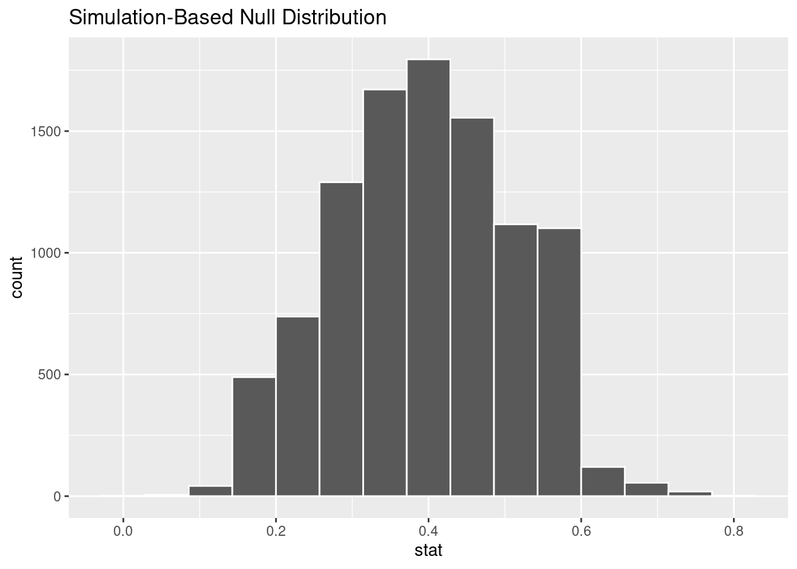
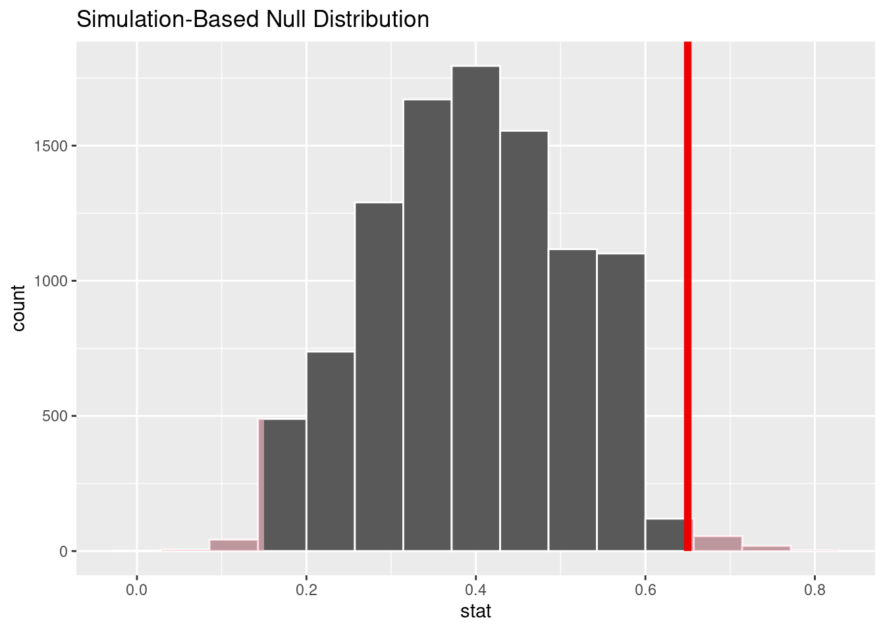
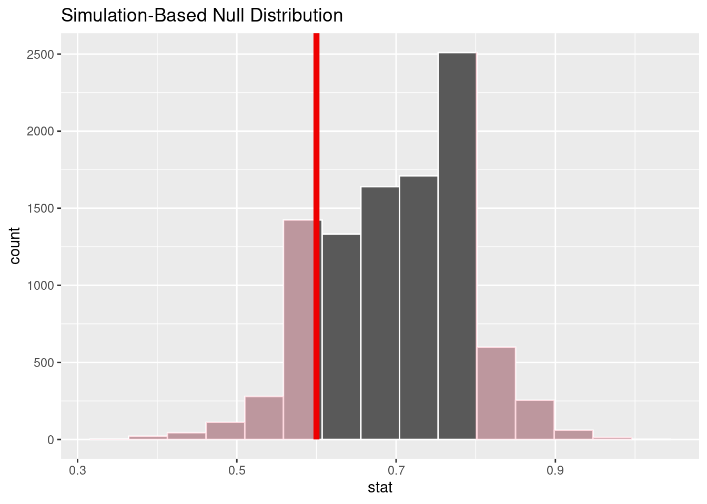

── Attaching core tidyverse packages ──────────────────────── tidyverse 2.0.0 ──
✔ dplyr 1.1.4 ✔ readr 2.1.5
✔ forcats 1.0.0 ✔ stringr 1.5.1
✔ ggplot2 3.5.1 ✔ tibble 3.2.1
✔ lubridate 1.9.3 ✔ tidyr 1.3.1
✔ purrr 1.0.2
── Conflicts ────────────────────────────────────────── tidyverse_conflicts() ──
✖ dplyr::filter() masks stats::filter()
✖ dplyr::lag() masks stats::lag()
ℹ Use the conflicted package (<http://conflicted.r-lib.org/>) to force all conflicts to become errors
library(infer)
The infer package
Getting to know infer
vignette("infer")
Parametric Bootstrap Distribution
The Parametric Bootstrap simulation assumes the null hypothesis is true then uses the data to construct a bootstrap distribution.
Today this means for each value in our sample R will choose a success or failure with probability p for each value of n.
We will do this with marbles
Problem Statement
Suppose it is known that nationally out of 100 people struggling with drug addiction, 40 of them will have some blood born disease.
A doctor at a clinic decides to test this hypothesis for her locality and samples 20 of her own patients. Of the 20 patients she finds 13 of them have a blood born disease.
Is this evidence enough to say that the locality is different than the proportion nationally?
Write out hypotheses
\[
H_0: p = 0.40 \\
H_a: p \ne 0.40
\]
\[
\alpha = 0.05
\]
Make some sample data
# This makes a 40% success sample. The rep() function repeats "disease" a number of timesclinic_sample <-c(rep("disease", 13), rep("no-disease", 7)) |>#enframe() makes our vector into a dataframeenframe() |>rename(number= name, has_disease = value)clinic_sample |>head()
We already know \(\hat{p} = 0.65\). But if we didn’t we could do this:
p_hat <- clinic_sample |># Telling R what we care about with specify specify(response = has_disease, success ="disease") |># Calculating the proportioncalculate(stat ="prop")p_hat
Response: has_disease (factor)
# A tibble: 1 × 1
stat
<dbl>
1 0.65
Create bootstrap distribution w/ infer()
# setting a seedset.seed(2024)# Saving the dfclinic_sample |># Here we specify() what is a successspecify(response = has_disease, success ="disease") |># This is where we set the null hypothesishypothesize(null ="point", p =0.40) |># This is how many times R will sample from the clinic sample# We are using draw to sample 1 value from a theoretical distribution with p = 0.40. generate(reps =1, type ="draw") |># This groups the reps together to find a proportion. calculate(stat ="prop")
Response: has_disease (factor)
Null Hypothesis: point
# A tibble: 1 × 1
stat
<dbl>
1 0.5
More replications
We want to do this process a lot to create the bootstrap distribution.
# setting a seedset.seed(2024)# Saving the dfnull_distn_one_prop <- clinic_sample |># Here we tell specify what is a successspecify(response = has_disease, success ="disease") |># This is where we set the null hypothesishypothesize(null ="point", p =0.4) |># Choosing 10000 replicationsgenerate(reps =10000, type ="draw") |># This is calculate(stat ="prop")
visualize() the bootstrap distribution.
null_distn_one_prop |># cheater function to graph, works like ggplot()visualize()

shade_p_value()
# shade the p valuenull_distn_one_prop |>visualize() +shade_p_value(obs_stat = p_hat, direction ="both")

We can use get_pvalue()
# get the pvalue to use. pvalue <- null_distn_one_prop %>%get_pvalue(obs_stat = p_hat, direction ="both")pvalue
# A tibble: 1 × 1
p_value
<dbl>
1 0.0392
Conclusion.
Reject null.
Make a parametric bootstrap distribution
You have a bag of marbles
Take one out, note its color, and replace it.
Do this 20 times. (Don’t look at the marbles).
Find the proportion of reds in those 20 times. (This is one full repetition).
Each person should do this once.
Add your proportions to the chalkboard graph.
Let’s do this problem again with a mathematical model.
\[ p \sim N(p,SE)\]
With \[SE= \sqrt{\frac{p(1-p)}{n}}\]
Let’s do problem 11 twice
We’ll do it once with the parametric bootstrap and once with a mathematical model.
Example 2 Problem 11, Ch 16
Statistics and employment In a large university where 70% of the full-time students are employed at least 5 hours per week, the members of the Statistics Department wonder if a smaller proportion of their students work at least 5 hours per week. They randomly sample 25 majors and find that 15 of the students work 5 or more hours each week.
Make sample
Nothing wrong with copying and editing code from above.
null_distn_one_prop |>visualize() +shade_p_value(obs_stat = p_hat, direction ="both")

get_pvalue()
pvalue <- null_distn_one_prop %>%get_pvalue(obs_stat = p_hat, direction ="less")pvalue
# A tibble: 1 × 1
p_value
<dbl>
1 0.188
Make conclusion
Example 3: Age at Marriage
There is a claim that the majority of women are waiting to get married until after 30. Although it is old and has a response bias use the modified age_at_mar to see if the proportion of women getting married after 30 was different in 2010.
library(openintro)
Loading required package: airports
Loading required package: cherryblossom
Loading required package: usdata
age_at_mar <- age_at_mar |>mutate(over_30 =case_when( age >30~"Over_30",TRUE~"Under_30" ))age_at_mar